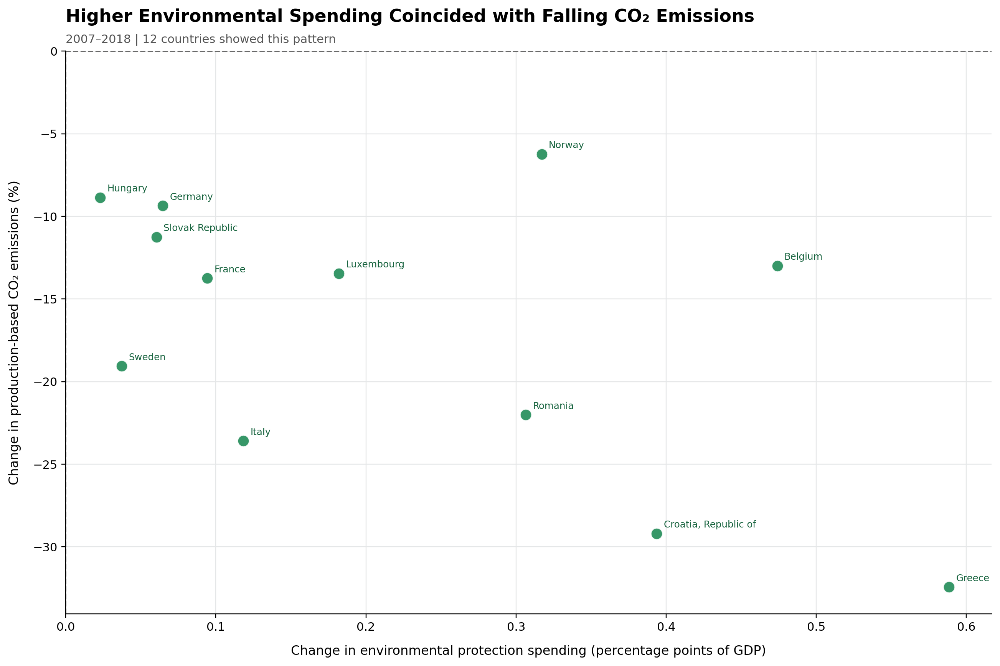
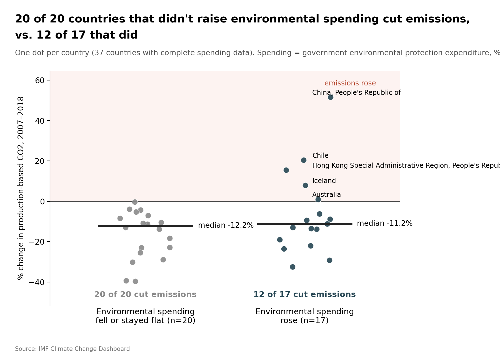

Proposition: Environmental Spending Helps Reduce Carbon Emissions
FOR the Proposition

Design Decisions and Rationale:
-
Cherry Picking
Score: -1.5 (Deceptive)
Rationale: We filtered the dataset to show only countries where environmental protection spending increased while production-based CO₂ emissions decreased. By excluding countries with other combinations of spending and emissions changes, we created an favourable view of the proposition without showing the full picture. -
Truncated Axis Ranges and Restricted Quadrant
Score: -2.0 (Deceptive)
Rationale: We restricted the axes to display only positive spending changes and negative emissions changes, focusing attention exclusively on favorable outcomes. This prevents readers from comparing these countries with those where emissions increased or environmental spending decreased. -
Strategic Time-Window Selection (2007–2018)
Score: -1.0 (Deceptive)
Rationale: We compared changes from 2007 to 2018 rather than showing the full historical trend beginning in 1995. Shrinking the time frame window allowed us to make the countries appear to care more about enviroment protection recently because since 1995 it is less of an overall change for some countries. -
Headline Framing
Score: -0.5 (Deceptive)
Rationale: Our headline, "Higher Environmental Spending Coincided with Falling CO₂ Emissions," frames the pattern among the selected countries. Although the word "coincided" describes an association rather than explicitly claiming causation, the headline has no mention of the other countries -
Visual Emphasis with Color
Score: -0.5 (Deceptive)
Rationale: We used green points with green country labels to make the selected countries stand out against the white background. Green is commonly associated with success, reinforcing the positive message of the visualization. Combined with the exclusion of countries that do not fit the pattern, these design choices make the favorable results more visually prominent and may encourage readers to interpret them as evidence of policy success.
AGAINST the Proposition

Design Decisions and Rationale:
-
Binary Categorization of Environmental Spending
Score: -0.5 (Deceptive)
Rationale: The visualization separates countries into two groups based solely on whether environmental spending increased or remained flat/decreased, ignoring the magnitude of those changes. A country with a negligible spending increase is grouped alongside one with a substantial increase, oversimplifying the relationship between environmental investment and CO₂ reductions. -
Selective Emphasis on Proportion of Countries Reducing Emissions
Score: -1.5 (Deceptive)
Rationale: The chart prominently highlights that 20 of 20 countries without spending increases reduced emissions, compared with only 12 of 17 countries that increased spending. This framing directs attention toward the proportion of countries achieving reductions rather than the magnitude of those reductions, making increased environmental spending appear less effective despite nearly identical median emissions changes of −12.2% and −11.2%. -
Selective Time Frame (2007–2018 Instead of 1995–2018)
Score: -1.5 (Deceptive)
Rationale: We restricted the AGAINST visualization to 2007–2018 rather than the longer 1995–2018 period used in the FOR visualization. By focusing on a shorter, more recent period, we exclude earlier trends in environmental spending and CO₂ emissions that could provide a different perspective on their relationship. This selective time frame limits the ability to observe long-term effects of environmental investment and may exaggerate the apparent ineffectiveness of increased spending. -
Using Percentage of GDP Instead of Absolute Environmental Spending Score
Score: -1.5 (Deceptive)
Rationale: We measured environmental protection spending as a percentage of GDP rather than in absolute monetary amounts. As a result, countries experiencing economic growth may be classified as decreasing environmental spending even when their actual expenditures increased. This potentially misrepresents environmental investment and strengthens the AGAINST argument by making emissions reductions appear achievable with less spending, when countries may actually be investing more money into environmental protection.
Final Reflection
Throughout this project, exploring the relationship between environmental protection spending and CO₂ emissions revealed how strongly visualization choices dictate the reader's takeaways. Neither visualization fabricated false data points, both were computed strictly from the International Monetary Fund's (IMF) Climate Change Indicators database. Yet, depending on whether data was presented at an individual country level or aggregated as a global index, the narrative swung from successful environmental stewardship to total policy futility.
What was most surprising was the ease with which earnest techniques (accurate bar lengths, labeled axes, clear titles) can be combined with deceptive aggregation and filtering to construct compelling opposing arguments. We define ethical visualization not merely as avoiding factual falsification, but as actively striving for proportional representation. When a subset of data is isolated to support a proposition, ethical visualizers should provide context regarding the overall distribution so readers are not misled by omission.